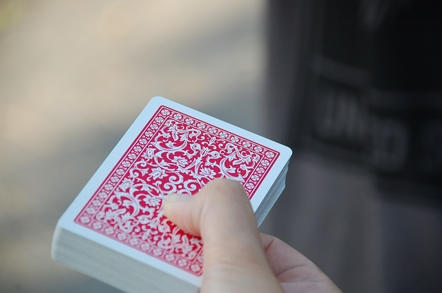

If you are curious about card magic, just scroll down
Card Magic
마술하면 가장 떠오르는 마술이라 하면 당연히 카드 마술이다. 관객과 가까이서 소통하며 하는 마술을 클로즈업 마술라 부르며 무대에서 하는 마술을 스테이지 마술이라 하는데 카드 마술은 클로즈업 마술에 속하며 특히, 테이블, 길거리 어느 장소에서든 카드만 있다면 할 수 있는 큰 특징을 가지고 있다. 카드 하나만으로 여러종류의 마술을 할 수가 있다. 그렇기에 카드 마술의 종류도 여러가지 있다.

카드 마술의 종류는 크게 장치가 되있는 트릭 카드를 사용한 마술, 마술 시작 전 미리 카드를 셋팅을 해둠으로써 그것을 활용하는 마술, 카드 매니플레이션이 있다. 카드 매니플레이션은 손 기술만을 사용하여 하는 카드 마술을 의미하는데 많은 연습이 필요하지만, 특수한 장치가 없는 일반카드로도 다양한 마술을 선보일 수 있다.
Cards Type
카드 마술에 주로 쓰이는 종류는 크게 바이시클, 매니플레이션, 트릭 카드 총 세가지가 있다.
Bicycle Card - 바이시클 카드
바이시클 카드는 주로 카드 마술의 기본이 되는 카드로 가장 보편적으로 쓰인다. 카드 겉에 에어왁싱(쿠션)이 씌워져 있어서 카드 자체가 다른 카드에 비해 두껍다. 하지만, 겉이 매끄러워 카드가 잘 미끄러져서 카드를 펼치는 기술을 하기가 수월하다.
Manipulation Card - 매니플레이션 카드
매니플레이션 카드는 줄여서 매니 카드라고도 불린다. 카드 겉이 매끄럽기 하지만, 바이시클 카드처럼 에어왁싱(쿠션)이 안되있어 패닝이 잘안되고 패닝을 잘 하려면 따로 패닝 파우더를 써야한다. 바이시클 카드에 비해 얇아서 숨기기가 쉽고 색상이 바이시클 카드와는 다른데 몇몇 특정 색상은 손에 카드를 숨기는 기술을 할때 눈에 잘 안띈다.
아래 이미지는 매니플레이션 카드 중 하나인 Murphy’s Card이다. 카드 뒷면이 살구색으로 되있어 있기때문에 카드를 손에 숨길때 눈에 잘 안띈다.
Trick Card - 트릭 카드
트릭 카드는 말그대로 트릭이 있는 카드이다. 카드 종류 별로 각각 다른 트릭장치가 있다. 한 덱에 모든 트릭이 담겨있는게 아니다보니 응용을 하더라도 정해진 트릭 밖에 못한다. 예를 들어 마술 하나하고 다른 마술을 보여주기 위해서는 새로운 카드를 꺼내야한다는 단점이 있다. 대신 기술 카드와는 다르게 재밌는 마술을 보여줌으로써 강한 이펙트를 줄 수 있다.
이미지는 백지 카드로 이루어진 Blank Card와 카드에 그려진 캐릭터를 활용한 마술을 할 수 있는 Card Toon이다. 일반 카드에서는 볼 수 없는 백지나 캐릭터가 그려져있어서 할 수 있는 마술은 적어도 그만큼 이펙트가 크다고 한다.